Aviso de spoilers. Aquí encontrarás el recorrido de la campaña, las soluciones de los acertijos que bloquean el paso y las rutas para Leave, Rest o Live. Los nombres en inglés, entre paréntesis, ayudan a identificar carteles, salas y objetos. Nuestros videos están en portugués de Brasil, así que el texto de las capturas aparece en portugués. Todas las imágenes vienen del gameplay de Bora de Play.
Cómo usar esta guía
Primera partida. Sigue los capítulos numerados. En cada zona, usa la tabla de recorrido para localizar la salida y comprobar el resultado antes de seguir. La primera vez que llegues a un teléfono, prueba a guardar y confirma el guardado antes de irte. Cuando abras un atajo, mira en el mapa qué zonas conecta. Guarda en las cajas de almacenamiento los objetos de final que pienses usar.
¿Ya estás jugando? Busca en la tabla el punto donde te atascaste y salta directo a la solución. Cuando haga falta volver a buscar un objeto, el capítulo lo avisa.
| Dónde me atasqué | Ir a |
|---|---|
| Cámara frigorífica o portón del motel | Llave de recepción |
| Puerta de las palmeras o acceso al ferry | Pomo y ferry |
| Coche en llamas que bloquea la estación | Desvío por el túnel |
| Código de la comisaría o riñonera de la gasolinera | Gasolinera y túnel de Riverside |
| Caja fuerte de la sheriff o código 3100 | Caja fuerte, pruebas y proyector |
| Interfono, fichas o apartamento 4B | Union Apartments |
| Funeraria, ataúd o cubos de la iglesia | Church Hill |
| Máscaras de las estatuas | Dónde encontrar las tres máscaras |
| Válvulas de las alcantarillas, campanas o fusibles | Alcantarillas y montaña |
| Cables, cintas o lentes | Paneles de Thelend |
| Teléfono de símbolos o árbol | Teléfono y estacas |
| Elección de Eddie, anillos o recuerdos | Los tres finales |
Ruta de la campaña
- Inicio y motel
- Centro y estación
- Riverside y la comisaría
- Union Apartments
- Church Hill
- Ayuntamiento y Loomis Park
- Alcantarillas y montaña
- Thelend y la puerta roja
- Los tres finales
1. Inicio y motel
| De dónde salgo | Referencia | Qué hago | Cómo sé que funcionó |
|---|---|---|---|
| Mesa del Miner Diner | Cocina con radio | Toma la llave del gancho y úsala en la puerta del restaurante. | Se abre la salida al teléfono y al coche. |
| Frente del motel | Farmacia y portón del paso subterráneo | Toma la llave en la zona de empleados, vuelve a la calle de abajo y abre el portón. | Llegas a la cerca con una abertura para pasar agachado. |
| Cámara frigorífica | Sala del fondo, después de la carne | Escribe 2311 y atraviesa para buscar la llave. | La Llave de Recepción aparece en el inventario. |
| Recepción | Tela a la derecha y escritorio | Corta la tela y abre el compartimento con la llave. | El registro muestra la ficha de Eddie y el número para el teclado. |
| Sótano de la tienda de regalos | Cuadro eléctrico junto al salón | Instala el fusible y enciende el salón. Completa la galería de tiro. | El premio es la llave de la piscina. |
| Vestuario de la piscina | Abrigo colgado | Toma la tarjeta para abrir la suite Grizzly. | La puerta de la suite da acceso a la red de la piscina. |
| Piscina | Escalera junto a la habitación 1 y tubería | Pesca el objeto y combínalo con la solución de limpieza. | El inventario muestra el pomo para la puerta de las palmeras. |
| Escena del bar | Folleto del teleférico | Toma la llave del ferry. Sal del motel y atraviesa el túnel. | La llave abre la oficina donde llamas al ferry. |
Objetivo: descubrir el número de huésped de Eddie y llegar al ferry.
En el Miner Diner, toma la llave del coche de la mesa, la llave del restaurante de la cocina y, si piensas ir por Rest, la caja de anillos cerrada del baño. La nota de emergencia da la frecuencia 89,0. Sal, contesta el teléfono y abre el maletero para recoger el material de la investigación. Toma el mapa del tablón de avisos y ve al Crimson Bear Motel.
Antes de salir del Miner Diner
- Mesa y cocina. La llave del coche abre el maletero. Para abrir la puerta del restaurante, toma la otra llave del gancho sobre la radio de la cocina.
- Baño. La caja de anillos ocupa espacio, pero puede quedarse guardada hasta que reúnas las estrellas. Fotografía la nota de la frecuencia para consultarla después.
- En la calle. El tablón con el mapa está pasado el coche. Sube por la carretera junto a él y atraviesa el túnel hasta ver el cartel del motel. La oficina está a la izquierda del portón.
La llave de recepción
- Lee la nota de la oficina junto al portón. Señala el almacén de Rodney.
- Toma la llave del paso subterráneo en la zona de empleados de la farmacia. Abre el paso, pasa agachado por la abertura de la cerca y sigue hasta el almacén.
- En la tienda, la nota dice que juntes 23 con el día del mes. El calendario indica 11. Escribe 2311 en la cámara frigorífica, atraviesa hasta la sala del fondo y toma la llave de recepción. Prepárate para salir cuando aparezca la criatura.
- Al volver, recoge el cúter y úsalo en las telas que bloquean el paso. En la oficina del motel, corta la tela de la derecha para llegar al escritorio. Usa la llave, lee la ficha de Eddie Velvet y anota el número de huésped. Escribe ese número en el portón.
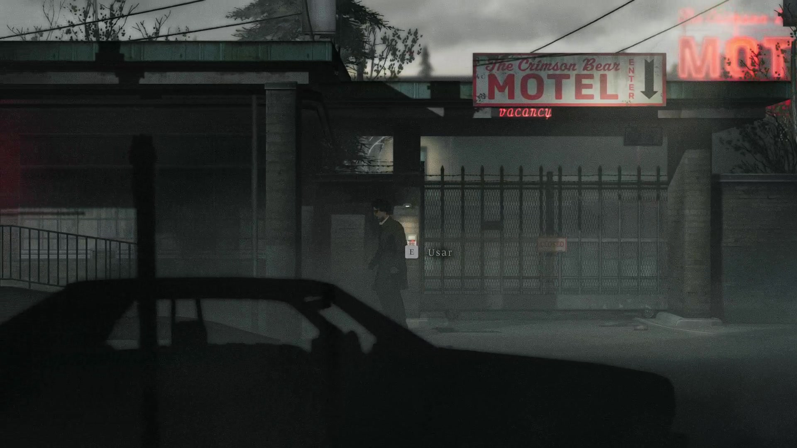
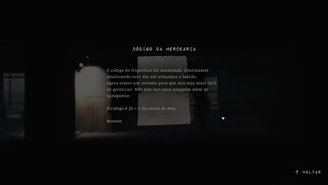
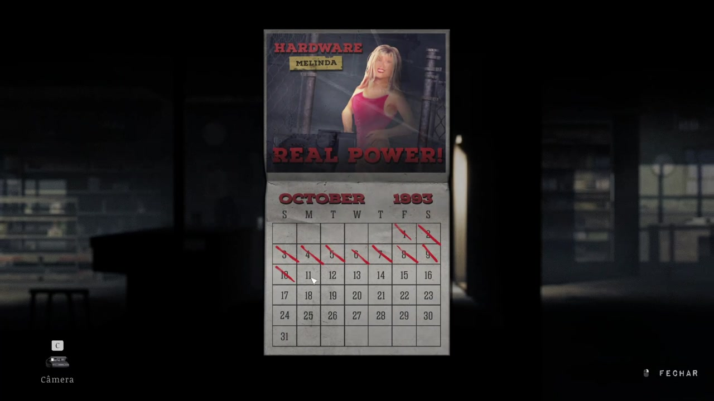
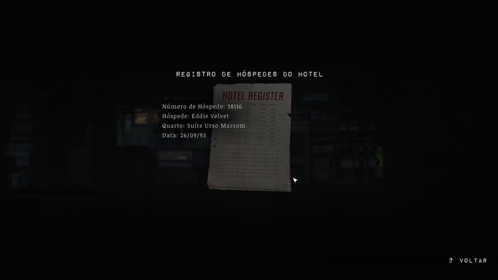
En nuestro gameplay, el registro mostraba 38116. Comprueba el número en la ficha de tu partida: puede ser distinto.
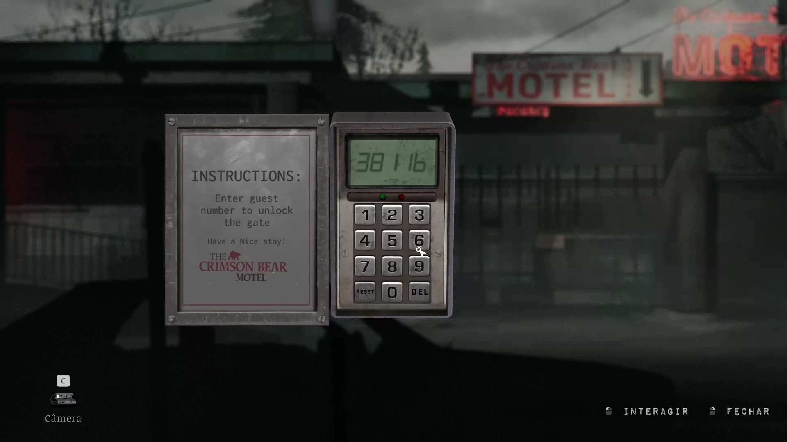
Si la vuelta desde el almacén parece bloqueada: busca la tela blanca en el túnel y córtala con el cúter. Entra en el pasaje oscuro antes de la puerta siguiente, alcanza el borde y sube la escalera. La otra tela te devuelve al camino del paso subterráneo. En recepción, la tela de la derecha lleva al fondo. La llave abre el compartimento del registro en esa sala.
La puerta de las palmeras
Toma el fusible en el sótano de la tienda de regalos e instálalo en el cuadro del motel. Enciende el salón de juegos, usa los perdigones en la galería de tiro y derriba las dianas para ganar la llave de la zona de la piscina. La tarjeta de la suite está en el abrigo del vestuario.
Pasa por la habitación 5 y el conducto para encontrar la solución de limpieza. En la suite Grizzly, recoge el revólver, la mitad de la Polaroid y la red de la piscina. Usa la red en la tubería de la piscina y limpia el objeto recuperado para obtener el pomo. Colócalo en la puerta de las palmeras del sótano. Sigue la escena del bar y busca la llave de la oficina del ferry junto al folleto del teleférico. Opcionalmente, llama al 58883 y usa 6671 en el armero de la tienda.
Si te falta el pomo: baja por la escalera de la piscina junto a la habitación 1. El objeto está dentro de la tubería, fuera del alcance de la mano. Después de alejar a la criatura, usa la red y combina el objeto sucio con la solución de limpieza en el inventario. La puerta de las palmeras está en el sótano de la tienda, detrás de la tela. A la salida, enfréntate a la criatura del túnel. Cuando caiga del techo, esquiva y ataca en el hueco. Abre la oficina con la llave, activa el panel y embarca. Hay una riñonera detrás de la tela a la izquierda de la oficina.
Referencias de ruta. Crimson Bear Motel — Into Indie Games, GameSpew.
↑ Índice2. Centro y estación
| De dónde salgo | Referencia | Qué hago | Cómo sé que funcionó |
|---|---|---|---|
| Muelle del centro | Tablón de la parada de autobús | Toma el mapa y ve a la calle del cine. | El mapa del centro queda disponible. |
| Coche en llamas | Portón bajo la escalinata | Baja por la escalera de mano, salta a la orilla opuesta y atraviesa el túnel. | Vuelves a la calle al otro lado del bloqueo. |
| Salida del túnel | Escalinata a Silver Road y teléfono | Sube hasta la estación, coloca el cartel y toma la llave del gancho A. | La Llave del Puente de Riverside entra en el inventario. |
Objetivo: llegar al teleférico y conseguir la llave del puente de Riverside.
En el centro, toma el mapa cerca de la parada de autobús. Desde la calle del cine, ve hasta la escalinata que lleva a la carretera bloqueada por el coche en llamas. Vuelve por la escalera, atraviesa el portón cercano y baja por la escalera de mano. Salta a la orilla opuesta y pasa por el túnel, agachándote cerca de las criaturas. Al salir, sube por la escalinata del otro lado y usa el teléfono como referencia para la entrada de la estación.
Referencias para el desvío. El coche en llamas marca el intento directo que no funciona. La escalera de mano después del portón lleva al punto donde se puede saltar sobre el agua. En el túnel, busca la salida a la calle antes de seguir hasta el fondo. En la calle siguiente, la escalinata a Silver Road sube hacia el teléfono de la estación. Toma el trozo del cartel del banco del piso inferior. Colócalo sobre el soporte de campanas y retira la llave del puente de Riverside del gancho A. Vuelve a la taquilla, examina el aviso y habla con el empleado para marcar los objetivos en el mapa. C y G ya están en el soporte. Tienes que traer A, B, D, E y F.
Opcional. En la clínica y en el cine están los pájaros rojo y amarillo. El plateado está en lo alto de la escalera con candado, cerca del tráiler del excavador. Dispara al candado, sube y lleva los tres a la jaula del Quiet Hour Café.
Referencia de ruta. Centro y estación — Into Indie Games.
↑ Índice3. Riverside y la comisaría
| De dónde salgo | Referencia | Qué hago | Cómo sé que funcionó |
|---|---|---|---|
| Puente de Riverside | Taller del desguace y cafetera | Toma la llave del portón trasero y cruza hasta la gasolinera. | Llegas a la zona donde puedes tomar la linterna. |
| Gasolinera Wing Oil | Túnel oscuro a la derecha y radio interior | Ilumina el pasaje y sintoniza la radio en 86,6. | El mensaje da 1715 para la puerta de la comisaría. |
| Despacho de la sheriff | Caja fuerte con dial | Gira derecha 15, izquierda 7, derecha 3, izquierda 10. | Obtienes la llave de la sala de pruebas. |
| Sala de pruebas | Reja que se abre con la llave de la caja fuerte | Toma la palanca y úsala en la placa de la morgue. | La placa 0013 da la pista del código invertido. |
| Ala norte | Proyector y matrícula afuera | Superpón la matrícula al texto, abre el interrogatorio con 3100 y reproduce la cinta. | La secuencia del policía desencadena la pelea y el camino a la campana A. |
Objetivo: conseguir la linterna, la palanca y la campana A.
Abre el puente con la llave de la estación. En el desguace, toma la llave del portón en el taller, junto a la cafetera. Abre la salida trasera y cruza hasta la gasolinera Wing Oil. Recoge la linterna al otro lado de la gasolinera. En la radio del túnel oscuro, sintoniza 86,6 y escucha el mensaje. La puerta de la comisaría se abre con 1715.
Riñonera opcional. Toma la llave del mostrador de la tienda de la gasolinera. Sal por la izquierda hasta la puerta del baño. Ábrela, corta la tela de la derecha con el cúter y recoge la riñonera del inodoro.

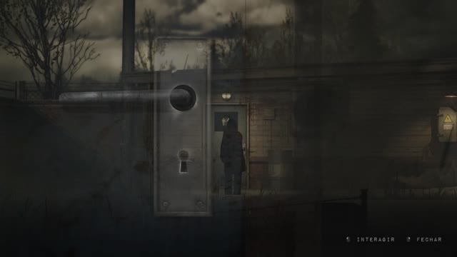

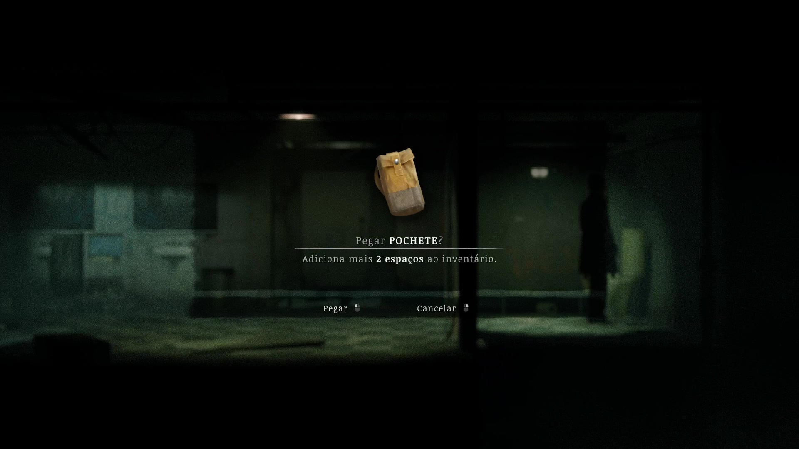
Caja fuerte, pruebas y proyector
La caja fuerte de la sheriff, la sala de pruebas y el teclado del interrogatorio son tres etapas de la misma ruta. Resuelve primero la caja fuerte para conseguir la herramienta que libera la pista de la placa. En la comisaría, busca la llave del sótano en el despacho de la sheriff y la llave del ala norte en el depósito subterráneo. Examina el manual de la caja fuerte y el libro que indica la secuencia de temas.
| Tema | Número | Giro |
|---|---|---|
| Huesos | 15 | Derecha |
| Espíritus | 7 | Izquierda |
| Cuerpo | 3 | Derecha |
| Mal | 10 | Izquierda |
Abre la caja fuerte y usa la llave en la sala de pruebas para tomar la palanca. En la morgue, arranca la placa 0013 con la herramienta. Toma la matrícula de fuera del ala norte y colócala en el proyector. El mensaje dice que inviertas la placa: 3100. Usa ese código en la sala de interrogatorios, habla con el policía y reproduce la cinta en el aparato de la sala. Enfréntate al policía y recoge la campana A en el camino que se abre después de la pelea. El rifle de la armería es opcional y la llave está en la cama de la celda B.
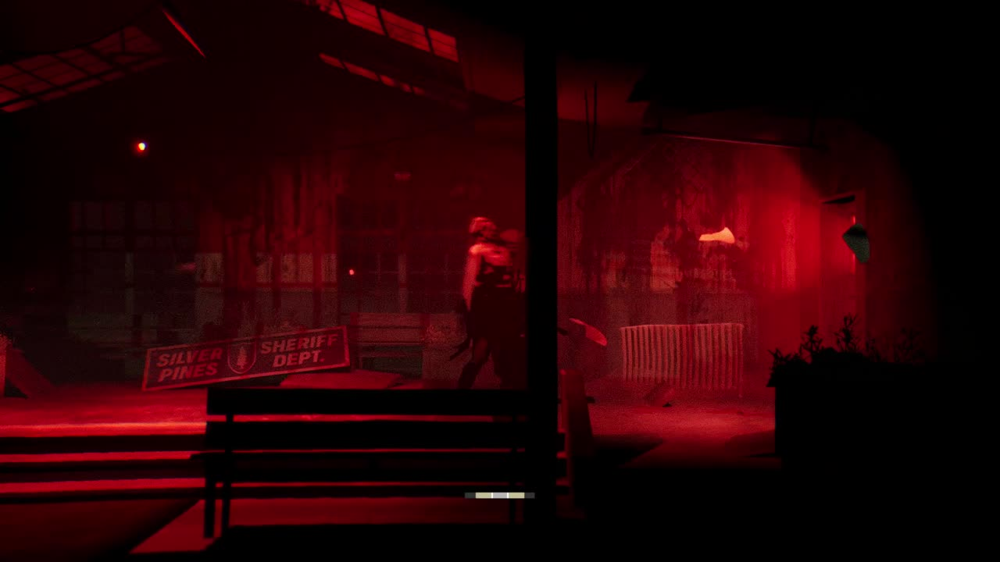
Referencia de ruta. Riverside y la comisaría — Into Indie Games.
↑ Índice4. Union Apartments
| De dónde salgo | Referencia | Qué hago | Cómo sé que funcionó |
|---|---|---|---|
| Cine | Sala oscura y hueco entre las butacas | Usa la linterna, cruza la sala y sal por la puerta del otro lado. | La calle del Union queda accesible. |
| Entrada del Union | Caja de llaves y sala de servicio exterior | Usa la llave, apaga el interfono y vuelve para llamar al 4B. | Se desbloquea la puerta de acceso a los apartamentos. |
| Pasillo de los apartamentos | Lavandería del sótano | Lleva las cuatro fichas a la máquina. | La llave del tercer piso sale de la máquina. |
| Sala del encargado | Panel de apartamentos | Escribe 1C, 3A, 2A, 3C y lleva el botón al ascensor. | El cuarto piso se puede seleccionar. |
| Azotea | Llave junto a la página del diario | Abre el 4B, usa la bañera y completa la pelea y el escenario inundado. | Sales con la campana D y puedes equipar el recuerdo de natación. |
Objetivo: entrar en el 4B, conseguir la campana D y abrir el cruce hacia Church Hill.
Usa la linterna en la zona oscura del cine y cruza hasta el lado de los apartamentos. Toma la llave de la sala de servicio en la entrada del Union, baja a la sala y apaga la transmisión del interfono. Vuelve al panel de la entrada y llama al 4B.
Reúne cuatro fichas de la lavandería: una en la sala del encargado, una en el segundo piso, una en el depósito del sótano y otra en la propia lavandería. Ponlas todas en la máquina y toma la llave del tercer piso. Usa la palanca en el espejo del baño del 3C para llegar al 3B y seguir explorando. Los recortes del encargado corresponden a los apartamentos 1C → 3A → 2A → 3C. Abre la cerradura en ese orden, toma el botón del cuarto piso e instálalo en el ascensor.
Cómo moverte entre los apartamentos. Después de romper el espejo del 3C, cruza al 3B y sal al pasillo del tercer piso. Ve al 3A y busca la tarjeta de cumpleaños. Desde el balcón roto más allá del 3A, baja para llegar al 2A y a la página de la máquina de escribir. En el 1C, el folleto de la galería identifica al artista. Estas pistas relacionan a los vecinos de los recortes con las cuatro puertas. Sube a la azotea para encontrar la llave del 4B. Guarda, entra en el apartamento e interactúa con la bañera. En la pelea, muévete cuando salgan las púas del suelo y ataca cuando aparezca la criatura. Después, toma el Sea Polished Glass Shard en el escenario inundado. Equípalo para nadar más lejos. Lleva el pájaro herido al agujero marcado con Hunger y recoge la campana D.
Opcional. Combina alcohol del alambique del 2B con el disolvente seco del 2A. Limpia la pared del 1C para revelar 1525, que abre el depósito con gasolina del sótano.
Referencia de ruta. Union Apartments — Into Indie Games.
↑ Índice5. Church Hill
| De dónde salgo | Referencia | Qué hago | Cómo sé que funcionó |
|---|---|---|---|
| Taller de barcos | Agua al oeste y escalera junto a la iglesia | Equipa el recuerdo de natación, cruza nadando y baja el puente. | El regreso por tierra queda abierto. |
| Salón parroquial | Llave en la mesa de la derecha | Abre la floristería y busca la llave de la zona familiar. | La puerta superior de la funeraria ya se abre. |
| Funeraria | Espejo con nombres de flores y teclado inferior | Escribe 752, envía el ataúd 2 al incinerador y recoge el cubo. | El cubo entra en el inventario cuando se apaga el fuego. |
| Calle del cementerio | Mazo, casas antiguas y pozo | Rompe la pared agrietada para conseguir la manivela y úsala en el pozo. | El cubo del pozo sube el tercer cubo. |
| Reja lateral de la iglesia | Cuatro huecos para símbolos | Completa triángulo, cruz, cruz, triángulo y sube por la torre. | Tras la secuencia en la iglesia, la puerta de la izquierda da acceso a la campana B. |
Objetivo: conseguir el mazo, la manivela y la campana B.
Con el recuerdo de natación equipado, cruza por el agua al oeste del taller de barcos, debajo del Silver Gazette. Sube por la escalera junto a la iglesia y activa el panel del puente levadizo para abrir el regreso por tierra.
- Iglesia. Recoge el primer cubo. En el salón parroquial, toma la llave de la floristería.
- Floristería. Pasa el mostrador y rompe las tablas para obtener la llave de la zona familiar de la funeraria. Anota los precios: lirio 7, rosa 5, campanilla 2.
- Funeraria. La nota del espejo indica lirio, rosa y campanilla. Escribe 752 en el acceso a los ataúdes. Identifica el ataúd 2, de Jacob Foster. Usa los carritos y el ascensor para llevarlo a la cinta de la cremación. Cuando el fuego se apague, recoge el cubo dentro del incinerador. Toma también la llave del cementerio.
- Cementerio. Recoge el mazo en la calle de arriba. Rompe la pared agrietada de una de las casas antiguas para conseguir la manivela. Úsala en el pozo del cementerio y recoge el último cubo.

Cómo transportar el ataúd. Coloca el carrito junto al ataúd 2 y pásalo al carrito. En la base del ascensor, pasa el ataúd a la plataforma y pulsa el botón. Sube por fuera, usa el carrito de arriba para llevar el ataúd hasta la cinta y activa la cremación. Espera a que el fuego se apague antes de entrar. Coloca los cubos en la reja y reproduce el collar del memorial, de izquierda a derecha: triángulo → cruz → cruz → triángulo. Sube por la torre, avanza por la secuencia del confesionario y sobrevive a las oleadas de enemigos dentro de la iglesia. La puerta de la izquierda lleva a la campana B.
Referencia de ruta. Church Hill — Into Indie Games.
↑ Índice6. Ayuntamiento y Loomis Park
| De dónde salgo | Referencia | Qué hago | Cómo sé que funcionó |
|---|---|---|---|
| Entrada de Loomis Park | Tablas en el portón | Usa la palanca y entra en el ayuntamiento. | Llegas al vestíbulo y las escaleras del ayuntamiento. |
| Vestíbulo del ayuntamiento | Sala del teléfono, sótano y escuela nocturna | Reúne la pinza, el molde y la llave del despacho. Abre el despacho de arriba. | La arcilla y la llave de las alcantarillas quedan disponibles. |
| Quiosco y mezcladora | Alcantarilla del parque y mezcladora amarilla | Busca la máscara llorosa y prepara el molde con la arcilla mezclada. | El inventario muestra el molde relleno. |
| Horno del ayuntamiento | Pinza y salón de reuniones | Saca la máscara deformada y gana la pelea. Coloca las tres máscaras en las estatuas. | La mano de la estatua del centro libera la campana F. |
Objetivo: conseguir la llave de las alcantarillas y la campana F.
Abre el camino de Loomis Park con la palanca. En el ayuntamiento, recoge la pinza en la sala del teléfono, la llave del despacho en el abrigo del sótano y el molde en la sala del artista. La máscara sonriente está en la zona a la que se llega por el pasillo de la escuela nocturna. Abre el despacho de arriba y toma la arcilla y la llave de las alcantarillas. Si vas por Rest, habla con la mujer de la escuela nocturna.
Cómo separar las tres máscaras
| Máscara | Dónde buscar | Qué llevar |
|---|---|---|
| Sonriente | Sala a la que se llega por el pasillo de la escuela nocturna | Acceso al piso de arriba |
| Llorosa | Galería bajo la alcantarilla cerca del quiosco | Llave de las alcantarillas |
| Deformada | Horno del ayuntamiento | Molde relleno, arcilla mezclada y pinza |
Abre la alcantarilla cerca del quiosco para buscar la máscara llorosa. Usa la arcilla en la mezcladora, combina la mezcla con el molde y mételo en el horno. Saca la máscara deformada con la pinza y enfréntate a la criatura en el salón. En las estatuas, coloca la llorosa a la izquierda, la deformada en el centro y la sonriente a la derecha. Toma la campana F.
Opcional. Usa la manivela en el reloj del ayuntamiento, ponlo en 10:07 y tira del candelabro del pasillo de arriba para abrir el compartimento del recuerdo. El armario de operaciones usa 1893.
Referencias de ruta. Loomis Park — Into Indie Games, Ayuntamiento — GameSpew.
↑ Índice7. Alcantarillas y montaña
| De dónde salgo | Referencia | Qué hago | Cómo sé que funcionó |
|---|---|---|---|
| Clínica | Alcantarilla junto al edificio y panel del muelle | Toma el engranaje. Instálalo con la manivela y baja los tres engranajes. | El nivel del agua baja y la tubería queda accesible. |
| Entrada de las alcantarillas | Tubería elevada y trabajador al final de la galería | Toma la llave, abre la reja y enciende A. | La sala de control muestra A activo. |
| Sala de control | Pasillo 1329 y pared agrietada | Ve hasta C, anota 1467 en el diagrama y usa el código para llegar a B. | A, B y C aparecen encendidos después de abrir las válvulas. |
| Panel de presión | Tres ruedas y compuerta principal | Sube las tres presiones y atraviesa la abertura. | El camino desencadena la pelea y la campana E. |
| Estación inferior | Soporte de campanas y cartel | Cuelga las campanas por letra y toca E, G, D, C, F, A, B. | La cabina llega a la plataforma. |
| Estación superior | Baño, cartel Trail y cuadro exterior | Usa 0441 en la salida y reúne dos fusibles de 40 A. | El cuadro da energía al sendero. |
Objetivo: conseguir la campana E y dar energía a la red eléctrica de la montaña.
Abre la alcantarilla cerca de la clínica y toma el engranaje pesado. En el panel de la compuerta del muelle, instala el engranaje y la manivela, baja los tres engranajes y activa el mecanismo. Entra en el sistema de alcantarillas, sube por la tubería liberada y toma la llave del trabajador para abrir la reja.
Enciende el control A junto a la reja. Desde la sala de control, explora el pasillo detrás de la pared agrietada para llegar al C. El diagrama de tuberías da 1467, el código del acceso al B. Guarda antes de activarlo y enfréntate al monstruo. Vuelve a la sala de control, confirma las tres luces verdes y gira los controles de presión al máximo. Atraviesa la compuerta, sigue los comandos de la pelea y recoge la campana E.
Lista antes de volver a la estación
| Campana | Dónde conseguirla |
|---|---|
| A | Después de la pelea con Roberts en la comisaría |
| B | Puerta de la izquierda en la iglesia, después de las oleadas |
| D | Escenario del 4B, después de alimentar a la criatura del agujero |
| E | Más allá de la compuerta principal de las alcantarillas |
| F | Mano de la estatua central en Loomis Park |
Si el panel de las alcantarillas todavía muestra una luz apagada, vuelve a la válvula de esa letra antes de tocar la presión. La secuencia de campanas de abajo es el orden para tocarlas. Para colgarlas, sigue la letra de cada gancho.
En la estación, cuelga las cinco campanas en sus ganchos. Toca E → G → D → C → F → A → B y embarca. En la estación superior, la contraseña 0441 está en la pared del baño. Sigue los carteles del sendero y reúne dos fusibles de 40 A: uno junto a la antena caída y otro en la caja de la construcción oscura. Instala los dos en el cuadro exterior, enciende la energía y vuelve por el túnel hasta el portón, ahora accesible. Sube por el sendero hasta Thelend.
Del cuadro de fusibles a Thelend
- Desde el cuadro exterior, vuelve a la izquierda y sube por el acceso marcado Trail. Busca la entrada del mismo túnel que usaste para llegar a la construcción del segundo fusible.
- Dentro del túnel, sigue a la izquierda hasta el portón. Ábrelo, entra en el pasaje y, en la sala siguiente, ve a la derecha y sube las escaleras. Si todavía está cerrado, vuelve al cuadro y comprueba que los dos fusibles estén instalados y el interruptor encendido.
- En la salida de arriba, retoma los carteles del sendero. Cerca de Thelend, cruza el tramo inundado hasta la alcantarilla baja, pasa agachado y baja la escalera para bajar el puente. Vuelve a subir y ve a la estación. El teléfono que suena es la referencia de llegada.
Referencia de ruta. Alcantarillas y Siah Kopa — Into Indie Games.
↑ Índice8. Thelend y la puerta roja
| De dónde salgo | Referencia | Qué hago | Cómo sé que funcionó |
|---|---|---|---|
| Entrada de Thelend | Sala del teléfono y panel de audio | Lee la sección AUDIO, reúne los cables y conecta las tres salidas. | La grabación da las frases que identifican las cintas. |
| Sala de edición | Estante de cintas y compartimento cerrado | Lee los conteos de muertes y escribe 0002. | Recibes la llave del fondo. |
| Salida trasera | Patio exterior, escaleras y ventana baja | Rodea el edificio y entra por la ventana. | La llave del Stage 1 está en la mesa de la oficina. |
| Stage 1 | Proyector y lentes cian, magenta y amarilla | Coloca las tres y levanta la cian. | El escenario se vuelve rojo y aparece el acceso a la puerta roja. |
| Zona de la puerta roja | Teléfono sin disco y símbolos en la pared | Busca el disco y marca los cinco símbolos. | La segunda mitad de la llave cae en el compartimento del teléfono. |
| Árbol | Reja, televisor del cuarto rojo y pasillo de alta tensión | Busca las tres estacas y úsalas en el árbol. | La tercera inicia la pelea previa al encuentro con Eddie. |

Objetivo: abrir el escenario rojo y llegar a la elección de Eddie.
Abre el atajo del puente y entra en el edificio. Reúne tres cables: en el panel de la entrada, en la zona de estanterías y en la sala de edición. Lee el manual técnico en la sala del teléfono. En el panel de audio, conecta OUT 2 → IN 6, OUT 4 → IN 5 y OUT 5 → IN 2. Cruza las frases del audio con los títulos de las cintas en la sala de edición. El conteo de muertes da 0002. Abre el compartimento y toma la llave del fondo.
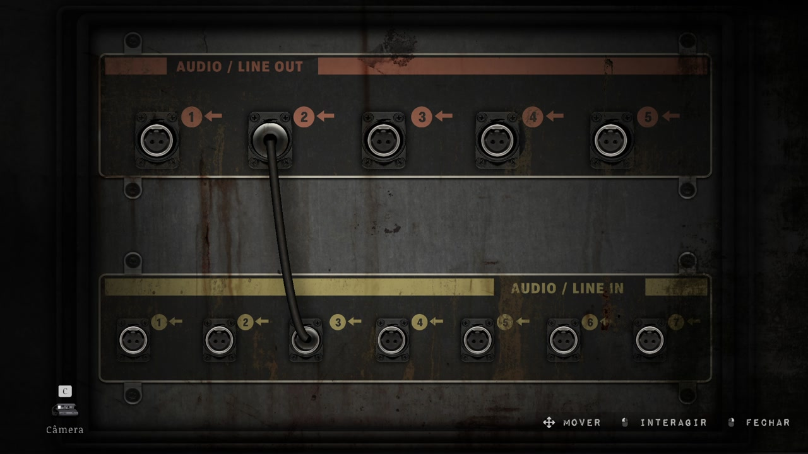
Usa la llave en la puerta Exit, al final del pasillo de los depósitos. Baja las escaleras exteriores y sigue por la reja de la derecha. En la zona siguiente, toma el pasaje del fondo, sube las escaleras y baja por los pasajes del otro lado hasta ver la ventana baja a la derecha. Sube por el borde hasta la ventana. Deberías caer en la oficina con la llave sobre la mesa. Abre la puerta interior para volver al vestíbulo. Toma la llave del Stage 1. Recoge la lente cian en la sala de películas, la magenta en el sótano inundado y la amarilla en lo alto de la torre. La llave de la torre está en la zona de depósito.
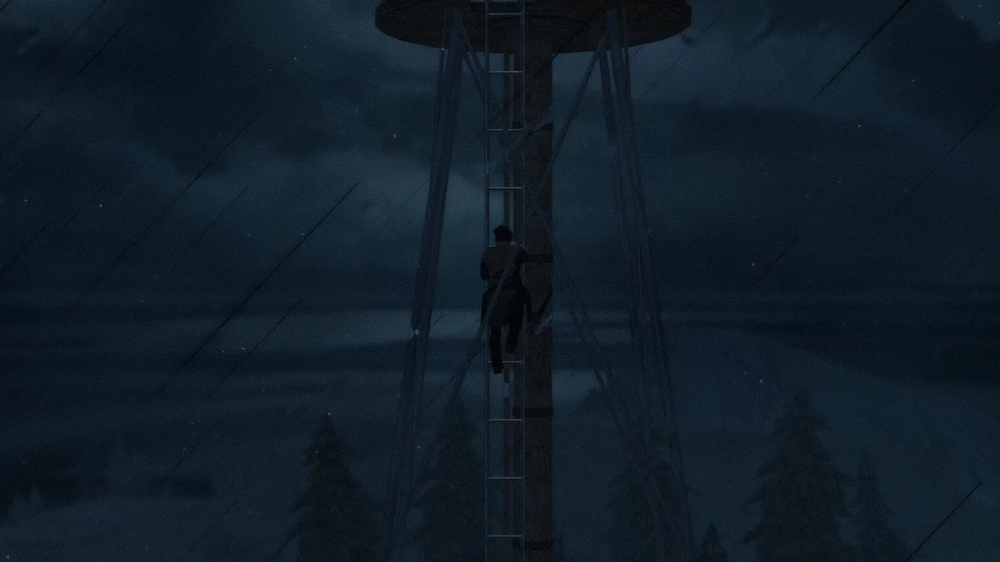
Coloca las tres en el proyector del Stage 1, levanta la cian y deja la magenta y la amarilla activas. Enfréntate al Conductor y pasa por la puerta roja.
Si el audio o el proyector no funcionan
| Panel | Comprueba |
|---|---|
| Audio | Usa la sección AUDIO del manual. Los números de salida y de entrada son distintos. |
| Caja de las cintas | Escribe también los ceros iniciales. La combinación tiene cuatro dígitos: 0002. |
| Proyector | Coloca las tres lentes. Deja la magenta y la amarilla en el haz y aparta la cian. |
El teléfono y las estacas
- Fotografía los cinco símbolos de la pared. Toma la llave oxidada y la media llave de los ganchos. Usa la oxidada para abrir la reja. Más allá de las pasarelas, sube por la escalera junto a los carteles para buscar los alicates.
- Baja por la escalera del hueco para buscar el disco del teléfono. Instálalo en el aparato y marca en el orden de la pared: omega, triángulo invertido, triángulo sobre cruz, círculo tachado, triángulo invertido con barra. Recoge la otra mitad y combina las dos para obtener la llave ensangrentada.
- Toma una estaca detrás de la reja de la llave ensangrentada. Para otra, busca la cinta Love detrás de la pared rompible del túnel y reprodúcela en el televisor del cuarto rojo. La tercera está en el camino de alta tensión, cerca del coche destrozado. Usa los alicates en los dos cables de la caja para abrir esa ruta.
- Usa las tres estacas en el árbol. Guarda antes de la tercera, que inicia la pelea. Después de la victoria, avanza hasta la zona inundada de Eddie. Conserva el guardado anterior a la conversación si quieres probar otros finales.
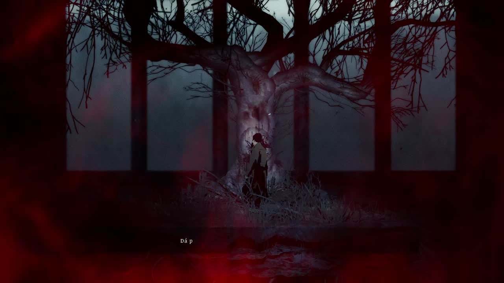
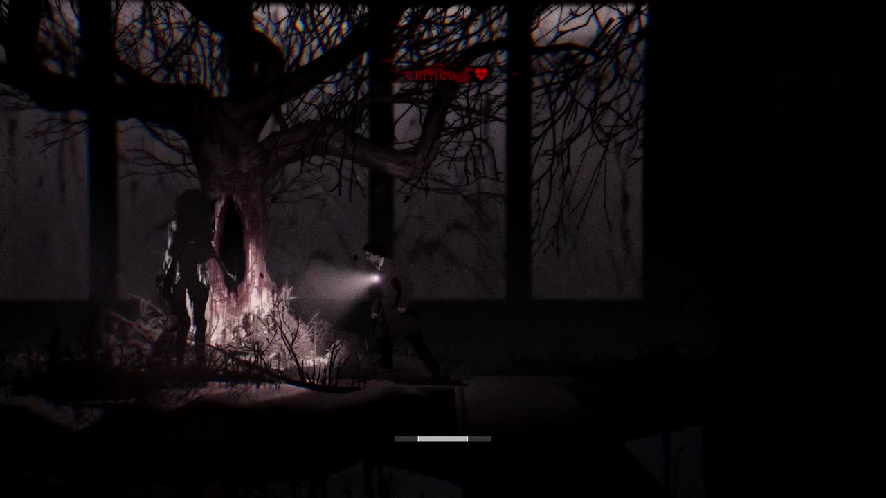
Referencias de ruta. Thelend y finales — Into Indie Games, Acertijos y paneles — Bonus Action.
↑ Índice9. Los tres finales
| De dónde salgo | Referencia | Qué hago | Cómo sé que funcionó |
|---|---|---|---|
| Teléfono antes de Eddie | Zona inundada y elección del diálogo | Guarda y elige matar a Eddie para Leave o perdonarlo para seguir las otras rutas. | Leave lleva al Miner Diner. Perdonarlo te devuelve a West Road. |
| West Road tras perdonar a Eddie | Anillo en el agua y huecos en el escenario del Rabbit Hole | Para Rest, reúne el anillo de Alice y el anillo de la caja de cinco estrellas. | Los dos anillos en el escenario abren la secuencia final. |
| West Road tras perdonar a Eddie | Costa de las afueras y cabaña del hombre de las manos quemadas | Para Live, comprueba los 25 recuerdos, habla con él y confirma la quema. | La confirmación en la cabaña inicia el final Live. |
Atención al botón. El final llamado Leave corresponde a la elección de matar a Eddie. La opción Leave que aparece en el diálogo significa irse y perdonar a Eddie, lo que abre las rutas Rest y Live.
Prepara el guardado de la elección
Guarda en el teléfono antes de hablar con Eddie. Si vas por Rest, revisa la caja de anillos y las estrellas. Para Live, usa la lista de recuerdos enlazada al final. Las dos rutas parten de la decisión de perdonar a Eddie.
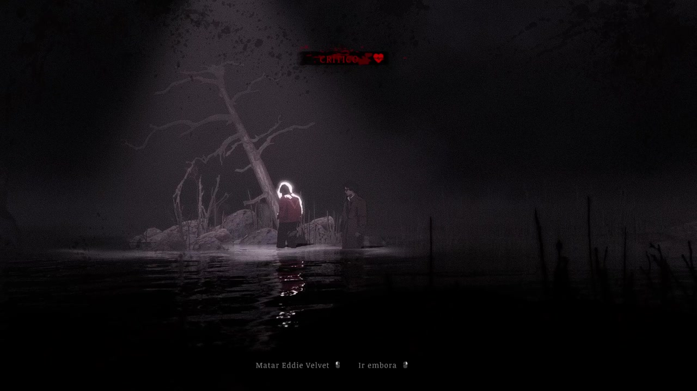
Leave
Elige matar a Eddie. Después de la transición, contesta el teléfono fuera del Miner Diner y usa el coche para terminar. Es el camino que se muestra en el gameplay de Bora de Play.
Rest
Perdona a Eddie. Toma el anillo de Alice en la zona inundada de West Road. El otro anillo está en la caja de anillos del baño del Miner Diner, que se abre con cinco estrellas:
| Estrella | Dónde buscar |
|---|---|
| Rabbit Hole | Mesa del bar durante la visita al lugar real. |
| Habitación 3 del motel | Vuelve a poner en marcha el ferry con el fusible de 20 A de la oficina del muelle. Usa el mazo para entrar en el faro, sube a por la llave de la habitación y abre la caja fuerte con 6671. |
| Quiet Hour Café | Junto al hombre herido, después de avanzar en la secuencia de Church Hill. |
| Agujero del excavador | Toma la pala dentro del tráiler cuando sea accesible y cava en el fondo del agujero. |
| Mujer del abrigo amarillo | Habla con ella en la clínica y en la escuela nocturna. Búscala en el banco cerca de la entrada de Thelend y avanza el diálogo para recoger la estrella. |
Combina las estrellas con la caja, saca el anillo y coloca los dos en el escenario del Rabbit Hole. Guarda antes de seguir por el acceso que se abre. En la persecución, avanza rompiendo las barreras, ataca en los tramos sin salida y esquiva los escombros hasta terminar la pelea en el restaurante.
Live
Perdona a Eddie y reúne los 25 recuerdos. Usa la lista de recolección durante la campaña, porque la ruta incluye objetos de zonas opcionales. Vuelve a la costa de las afueras, habla con el hombre de las manos quemadas y confirma la quema de los recuerdos en la cabaña. La guía de recolección de los enlaces de abajo muestra dónde están los recuerdos y ayuda a comprobar lo que falta.
Referencias. Rutas de los tres finales — Gamer Social Club, Ubicación de los 25 recuerdos — Gamer Social Club, Mapa de los recuerdos — Gamer Guides.
↑ Volver arriba